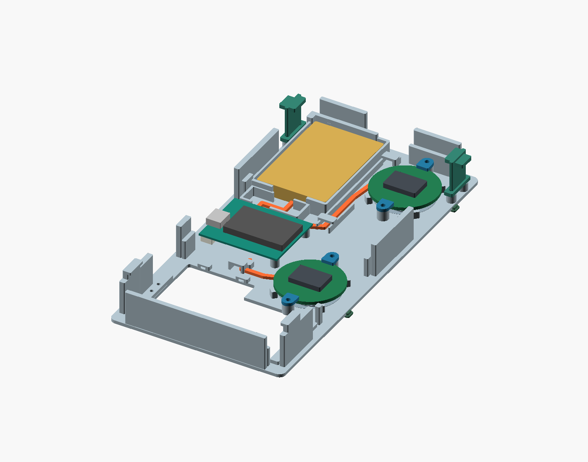
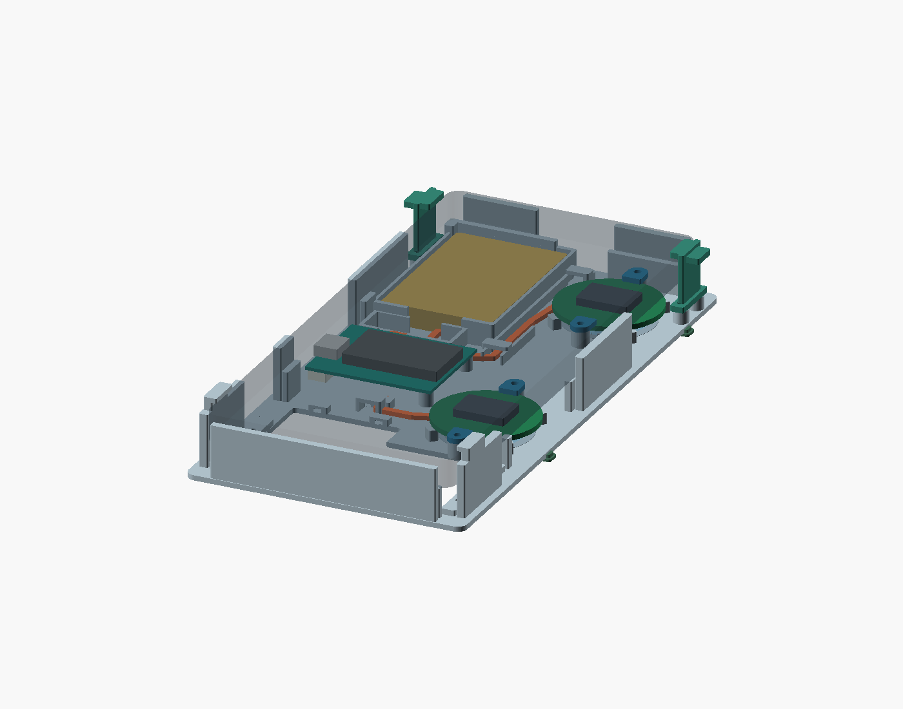
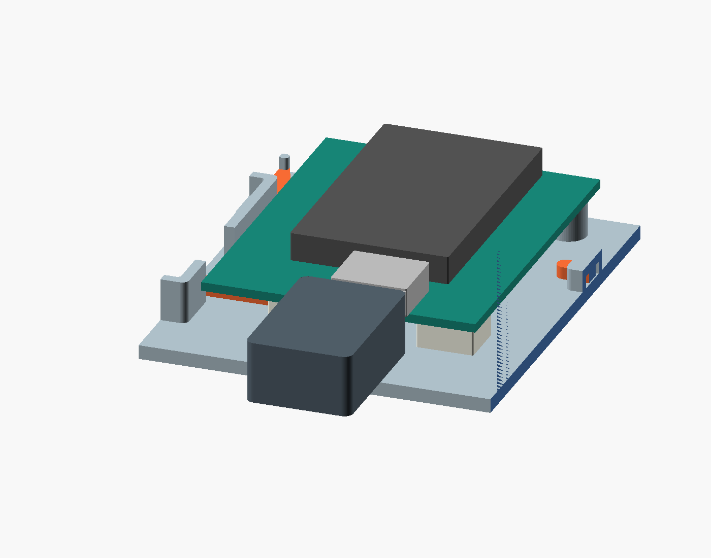
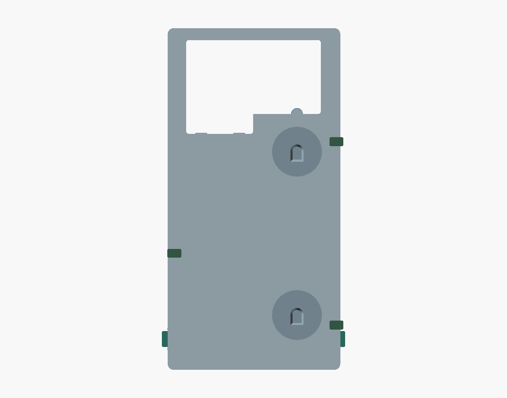
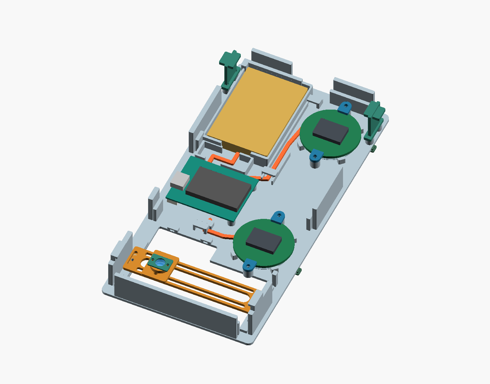

Les deux cartes PMW Ø32 mm restent sous l’A13, comme la LilyGO et la batterie. La caméra dispose d’une fenêtre ouverte. Le pont et la petite lentille sont facultatifs et démontables.

Sans téléphone : vert = cartes ; jaune = batterie ; orange = cheminement indicatif des fils ; attaches et patins en TPU.
Le téléphone est représenté transparent pour montrer les composants dessous. Les retours supérieurs sont fixes ; les deux attaches inférieures se libèrent par leurs languettes.Encombrement et passages
| Élément | Cote nominale | Remarque |
|---|
| Plateau → dos du téléphone | 12,0 mm | Patins de 0,8 mm compris ; R08 : 13 mm. Hors relief des caméras. |
| Coffrage rigide | 86,7 × 171,5 mm | 22 mm de haut depuis son dessous ; ce n’est pas l’épaisseur sous le téléphone. |
| Largeur avec languettes TPU | ≈ 91,8 mm | Les languettes dépassent localement pour pouvoir les saisir. |
| Fond / guidage des câbles | 1,6 mm / tunnels 5,2 × 3 mm | Fils souples soudés bas ; pas de grandes broches verticales. |
| Deux PMW | Ø32 mm ; entraxe 82 mm | Épaisseur PCB supposée 1,6 mm. Dessus PCB à 7,4 mm du plateau. |
| LilyGO T7-S3 | ≈ 39 × 31,17 mm | Deux points de montage issus de la CAO constructeur ; baie latérale ouverte. |
| Batterie EEMB LP603449 | 34,5 × 51 × 6,3 mm | Logement 36 × 53 mm ; aucune carte ou vis sur la poche LiPo. |
Le boîtier USB de la LilyGO laisse nominalement 0,6 mm avant le dos plat du téléphone. C’est une marge de prototype : vérifier la carte reçue, les soudures et le câble réel. Ne pas forcer pour fermer.

Baie de service ouverte ; câble témoin de 18 × 12 × 7 mm. La fiche réelle et ses boutons voisins restent à contrôler sur le coupon.
Dessous : deux sorties optiques PMW, fenêtre caméra et trois patins TPU emboîtables.Fixation au quotidien
- Engager le haut du téléphone sous les deux petites retenues PLA.
- Rabattre le bas en écartant légèrement les deux attaches TPU, puis les relâcher.
- Pour retirer l’A13, tirer les languettes vers l’extérieur et relever le bas.
Les quatre vis des attaches servent au montage initial, pas à chaque utilisation. Prévoir une protection souple mince de 0,3 mm sur les appuis du dos. Les lèvres conservent un jeu vertical de 0,6 mm : elles retiennent le téléphone sans devoir comprimer sa vitre. Aucun essai de maintien réel n’a encore été effectué.
Caméra et lentilles : deux fonctions différentes
Caméra de l’A13
Commencer sans pont ni lentille. L’ouverture supérieure est élargie pour ne pas imposer un seul objectif. Le pont se règle en longueur et la cassette latéralement ; le centre dessiné n’est pas une mesure de la caméra.
La cassette optionnelle reçoit la CAX100 annoncée Ø6,28 × 2,44 mm (alésage 6,65 mm), avec retenue TPU. Il s’agit d’une lentille de collimation laser : son intérêt macro avec l’A13 n’est pas démontré. Vérifier le dégagement du relief caméra avant de l’installer.
Lentilles des PMW
Les LM19 sont nécessaires aux pointeurs. Deux sièges amovibles remplacent l’ouverture circulaire seule : appui à la hauteur de référence, logement arrondi et sortie lumineuse évasée.
Les sièges peuvent être orientés avant serrage. L’orientation et le centrage exacts de la puce sur les modules du vendeur restent à contrôler avec le coupon. Les témoins de composants des images sont des volumes simplifiés, pas des modèles de fabrication.

Pont réglable démontable. L’électronique reste en place quand on retire l’optique d’essai.
À imprimer d’abord
Ne pas lancer tout le coffrage avant ces petits essais. Ils limitent le plastique perdu si le PLA, le TPU ou le module reçu demandent une correction.
| Essai | Fichiers | Ce qu’on vérifie |
|---|
| Fixation de l’A13 | Coupon inférieur PLA + 2 attaches TPU ; coupon supérieur PLA | Largeur, introduction sans forcer, tenue et retrait. Pas de pression sur l’écran ni sur les boutons. |
| Module optique | Coupon PMW + un siège + deux brides + trois patins | Appui de la LM19, orientation, soudures et qualité du suivi à la hauteur obtenue. |
| Connectique | Coupon LilyGO | Trous, USB et fiche batterie réellement branchée. Ce coupon ne remplace pas le contrôle de hauteur dans le coffrage. |
Fichiers STL et matériaux
| Pièce | Matériau | Quantité dans le fichier |
|---|
| 01 — coffrage | PLA | 1 |
| 02 — attaches à languette | TPU, essai 95A | 2, couchées pour l’impression |
| 03 — brides des cartes PMW | PLA | 4 |
| 04 — pont optique | PLA | 1, optionnel |
| 05 — cassette CAX100 | PLA | 1, optionnelle |
| 06 — retenue souple de lentille | TPU | 1, optionnelle |
| 07 — patins emboîtables | TPU | 3, semelle 0,8 mm ; emboîtement à tester |
| 08 — sièges LM19 | PLA | 2 |
| 09 — rondelles M2 | TPU | 12 : 4 × 0,4 ; 4 × 0,8 ; 4 × 1,2 mm |
Rondelles : Ø extérieur 6 mm, trou 2,3 mm. Dans le fichier, les rangées de Y croissant vont de 0,4 à 1,2 mm. Utiles sous une tête de vis ou pour un jeu d’assemblage ; pas comme réglage de précision comprimé sous les PMW, les appuis du téléphone ou les patins.
Réglage de départ, à contrôler dans Bambu Studio : buse 0,4 mm, PLA en couches de 0,16 mm, 4 parois, 20–25 % de remplissage. TPU en couches de 0,2 mm, plein pour les petites pièces. Orientations STL fournies ; vérifier les surplombs des retenues PLA et les supports localisés si nécessaires. Aucun profil machine ni G-code n’est fourni : le modèle de l’imprimante et le comportement du TPU ne sont pas validés ici.
Petite visserie et précautions
- Attaches TPU : 4 vis M2 × 6 mm. Brides PMW : 4 vis M2 × 6 mm. LilyGO : 2 vis M2 × 4 mm, seulement si elles passent librement dans la carte reçue. Avant serrage, vérifier qu’aucune pointe ne traverse le fond.
- Pont : 2 vis M2 × 5 mm. Cassette : 2 vis M2 × 5 mm et écrous bas. Retenue de lentille : 2 petites vis M1,6 × 3 mm. Ce montage optique peut attendre.
- Les trous de 1,7 mm sont des avant-trous PLA à ajuster/tarauder selon la visserie. Ce ne sont pas des inserts métalliques. Ne pas serrer le TPU jusqu’à l’écraser.
- Le connecteur de l’EEMB n’est pas réputé compatible directement avec celui de la LilyGO : vérifier type, polarité et câble d’adaptation. Logement d’adaptateur prévu à côté de la batterie, pas sur sa poche.
- Ne pas utiliser une LiPo gonflée, l’écraser, la percer ou la laisser porter le poids du téléphone. Montage mécanique d’abord, batterie débranchée.
- Le ruban LED photographié est marqué 12 V. Il ne fait pas partie du câblage 1S prévu ; seules des réservations pour un futur petit éclairage adapté sont ménagées près de la caméra.
- Des patins TPU peuvent accrocher le plateau. Si une pellicule glissante est ajoutée, son épaisseur change la hauteur optique : refaire le test PMW. La déformation et l’usure du TPU ne sont pas simulées.
Ce qui est contrôlé / ce qui ne l’est pas.Les fichiers sont soumis à un contrôle de fermeture des maillages, de pièces séparées et d’intersections avec les enveloppes nominales. Cela ne prouve ni l’ajustement sur l’A13 réel, ni l’absence de collision avec ses reliefs caméra, ni le centrage optique des modules marchands. Voir
les résultats détaillés. Les rondelles et coupons sont précisément là pour tester avant de figer le modèle.
Modèle de référence et sources
Le Samsung a13 Case de D Har a été téléchargé et inspecté : enveloppe mesurée 82,5 × 171,2 × 14,6 mm. Licence affichée CC BY-SA 4.0. La R09 n’importe pas sa géométrie ; elle conserve un coffrage paramétrique séparé, pour éviter la double épaisseur. Le modèle communautaire n’est pas une certification d’ajustement du SM-A137F.
Contrôles techniques : CAO constructeur LilyGO T7-S3 (STEP V1.2, DXF V1.1) ; fiche PixArt PMW3389, figures 5, 7 et 9 pour la hauteur et les sièges LM19 ; dimensions annoncées de la CAX100. L’épaisseur et les composants périphériques des cartes rondes ne sont pas encore mesurés.
Source paramétrique OpenSCAD · Révisions précédentes conservées. Aucune impression physique n’a été lancée.